Har bir sahna: biriktiriladigan namuna rasmlar (rasmni bosib saqlang), ovoz qatori va rasm prompti. ChatGPT'da formatni 9:16 qiling, namunalarni biriktiring, «Nusxa olish» bilan promptni qo'ying.
1
Telefon nuri
9:16 · rasm0:00–0:03
OvozYuz ming ko'rish, brat!
Shu rasmlarni biriktiring
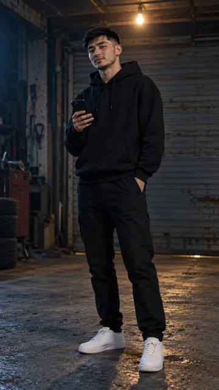
1-yigit (belgisiz)
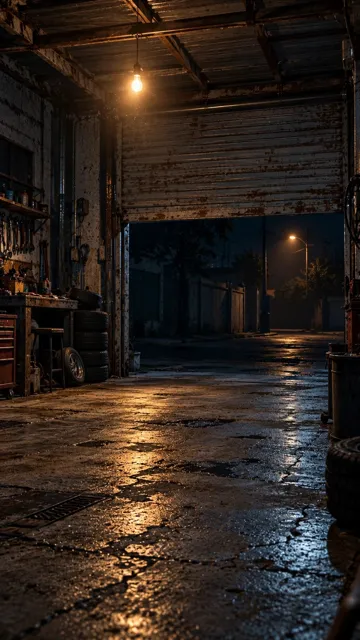
Garaj
✅ Tayyor rasm
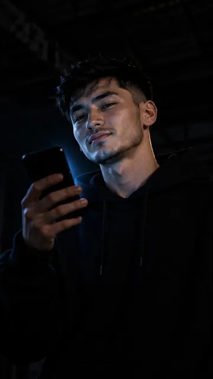
Rasm prompti (ChatGPT, 9:16)
Close-up portrait, vertical 9:16. Almost total darkness in an old garage at night. THE FIRST GUY holds his smartphone close to his face and looks at the screen with a proud, cocky half-smile; the only light is the cold blue-white glow of the phone screen lighting his face from below, everything around him falls into deep black shadow, the screen itself faces him and is not visible to the camera. THE FIRST GUY: a fictional Uzbek young man about 22, slim, short black hair with a clean fade on the sides, light black stubble, sharp dark eyes, plain black hoodie. Cinematic film still, vertical 9:16, shot on 35mm, extreme low-key lighting, cold blue-grey color grade with deep blacks, fine film grain, realistic skin texture. Keep THE FIRST GUY exactly as in the attached reference image: same face, hair, stubble and black hoodie. No text, no letters, no logos, no watermark, no subtitles.
2
2-yigit soyadan chiqadi
9:16 · rasm0:03–0:07
OvozYuz ming ko'rish. Nechta odam sotib oldi?
Shu rasmlarni biriktiring
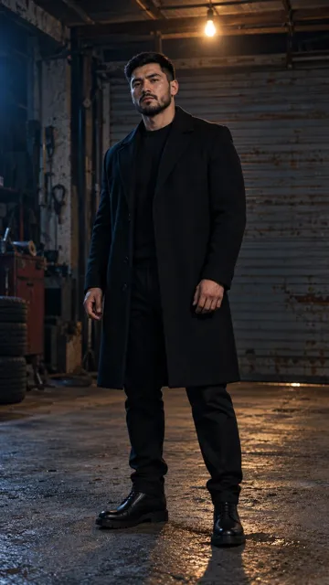
2-yigitGaraj
✅ Tayyor rasm
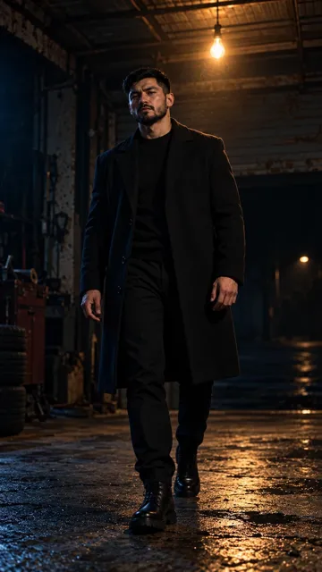
Rasm prompti (ChatGPT, 9:16)
Medium shot, vertical 9:16, slightly low angle. In a dark old garage at night, THE SECOND GUY steps out of deep shadow into the edge of the light from a single bare bulb hanging above: half of his face and body still in darkness, the other half lit warm from above, one foot forward mid-step, calm heavy serious gaze straight ahead, no smile. Behind him the rusty metal shutter door fades into black. THE SECOND GUY: a fictional Uzbek man about 30, broad-shouldered strong build, short neat black hair, short well-groomed black beard, long black wool coat over a plain black crew-neck sweater. Black trousers, black boots. Cinematic film still, vertical 9:16, shot on 35mm, low-key lighting, cold blue-grey color grade with deep blacks, one warm light source, light haze, fine film grain, realistic skin texture. Keep THE SECOND GUY exactly as in the attached reference image: same face, beard, hair, coat and sweater. No text, no letters, no logos, no watermark, no subtitles.
3
Telefonni tushiradi
9:16 · rasm0:07–0:09
Ovoz(BOOM, jimlik)
Shu rasmlarni biriktiring
1-yigit (belgisiz)Garaj
✅ Tayyor rasm
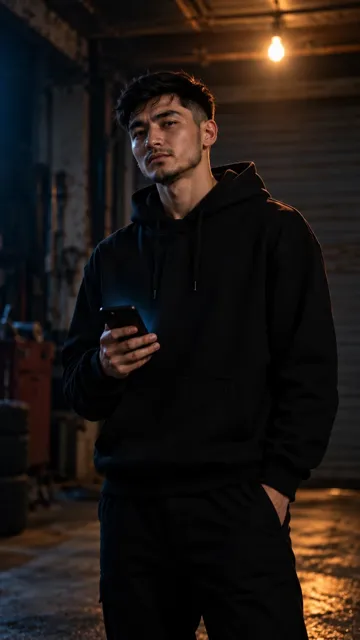
Rasm prompti (ChatGPT, 9:16)
Medium close-up, vertical 9:16. In a dark old garage at night, THE FIRST GUY slowly lowers his smartphone to chest height; his proud smile is gone, his face is serious and a little lost, he looks ahead at someone off-camera. The phone screen glow now lights only his hands and the bottom of his chin, a single bare bulb far behind him makes a soft warm rim light on his hair and shoulders, deep shadows around. THE FIRST GUY: a fictional Uzbek young man about 22, slim, short black hair with a clean fade on the sides, light black stubble, sharp dark eyes, plain black hoodie. Cinematic film still, vertical 9:16, shot on 35mm, low-key lighting, cold blue-grey color grade with deep blacks, one warm light source, light haze, fine film grain, realistic skin texture. Keep THE FIRST GUY exactly as in the attached reference image: same face, hair, stubble and black hoodie. No text, no letters, no logos, no watermark, no subtitles.
4
«Shovqin»
9:16 · rasm0:09–0:16
OvozNol. Demak, bu savdo emas. Shovqin.
Shu rasmlarni biriktiring
2-yigitGaraj
✅ Tayyor rasm
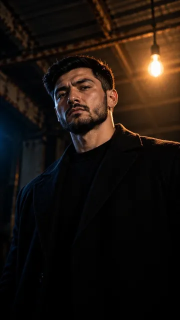
Rasm prompti (ChatGPT, 9:16)
Close-up, vertical 9:16, low angle looking slightly up at THE SECOND GUY's face, which gives him quiet power. He looks straight into the camera, calm and cold, no smile, eyes steady, jaw relaxed; a single bare bulb above and behind him makes a warm rim light on his hair and the edge of his beard, the front of his face lit softly, the background is the dark ceiling and rusty beams of an old garage fading into black. THE SECOND GUY: a fictional Uzbek man about 30, broad-shouldered strong build, short neat black hair, short well-groomed black beard, long black wool coat over a plain black crew-neck sweater. Cinematic film still, vertical 9:16, shot on 35mm, low-key lighting, cold blue-grey color grade with deep blacks, one warm light source, light haze, fine film grain, realistic skin texture. Keep THE SECOND GUY exactly as in the attached reference image: same face, beard, hair, coat and sweater. Leave the lower third of the frame darker and simple for on-screen text. No text, no letters, no logos, no watermark, no subtitles.
5
Trend ekranlar
9:16 · rasm0:16–0:32
OvozTrend seni ko'rsatadi. Lekin sotmaydi...
Shu rasmlarni biriktiring
Namuna kerak emas
✅ Tayyor rasm
Rasm prompti (ChatGPT, 9:16)
Vertical 9:16. A dark room filled with a wall of many glowing smartphone screens floating in black space at different distances, each screen showing a different blurred short vertical video: young people dancing, a person laughing, a cat jumping, colorful lights, fast motion blur on every screen; the faces on the screens are tiny, blurred and unrecognizable. Bright saturated screen colors stand out against the cold dark background, the screens are slightly tilted in different directions like a chaotic social media feed. Cinematic film still, vertical 9:16, shot on 35mm, low-key lighting, cold blue-grey color grade with deep blacks, glow and light bloom from the screens, fine film grain. No readable text, no letters, no app logos, no icons, no watermark, no subtitles.
6a
Choyxonada suhbat
9:16 · rasm0:34–0:40
OvozOdamni yig'ish oson. Ushlab qolish qiyin.
Shu rasmlarni biriktiring
1-yigit (belgisiz)2-yigit
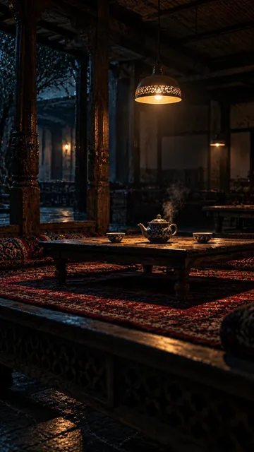
Choyxona
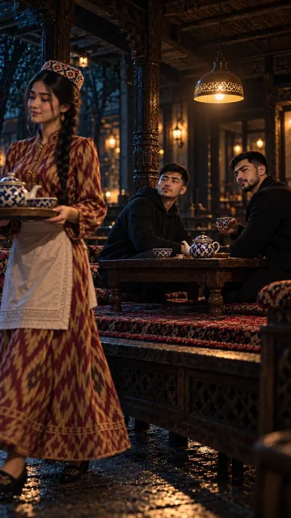
5b-sahna (stol)
✅ Tayyor rasm
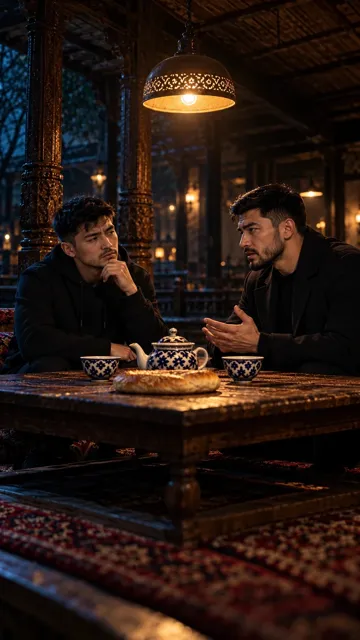
Rasm prompti (ChatGPT, 9:16)
Medium two-shot, vertical 9:16, eye level across a low wooden choyxona table at night. THE FIRST GUY and THE SECOND GUY sit facing each other at the table, seen in three-quarter view; THE SECOND GUY leans slightly forward with his forearms on the table and talks calmly and seriously, THE FIRST GUY listens with a doubtful, thoughtful look. On the table: a white teapot with a blue cotton-boll pattern, two piyola tea bowls and a round non bread. A single warm lamp hanging above the table lights them, the rest of the dim choyxona fades into blue-grey darkness with soft blurred carved wooden pillars and empty tapchan, no other people. THE FIRST GUY: a fictional Uzbek young man about 22, slim, short black hair with a clean fade on the sides, light black stubble, sharp dark eyes, plain black hoodie. THE SECOND GUY: a fictional Uzbek man about 30, broad-shouldered strong build, short neat black hair, short well-groomed black beard, long black wool coat over a plain black crew-neck sweater. Cinematic film still, vertical 9:16, shot on 35mm, low-key lighting, cold blue-grey color grade with deep blacks, one warm light source, light haze, fine film grain, realistic skin texture. Keep THE FIRST GUY exactly as in the attached reference image: same face, hair, stubble and black hoodie. Keep THE SECOND GUY exactly as in the attached reference image: same face, beard, hair, coat and sweater. Same choyxona, table and lamp as in the attached choyxona images. No text, no letters, no logos, no watermark, no subtitles.
6b
Piyola
9:16 · rasm0:40–0:46
OvozIshingni ko'rsatmasang, u tomoshabin. Mijoz emas.
Shu rasmlarni biriktiring
2-yigitChoyxona
✅ Tayyor rasm
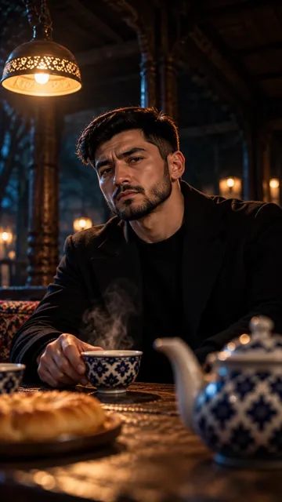
Rasm prompti (ChatGPT, 9:16)
Close-up, vertical 9:16, slightly low angle. THE SECOND GUY sits at the low wooden choyxona table and slowly puts his piyola tea bowl down on the table, looking ahead at someone off-camera with a calm heavy look, no smile; a thin wisp of steam rises from the tea below his chin and never covers his face; in the foreground, out of focus, the white teapot with a blue cotton-boll pattern. A single warm hanging lamp lights his face from the side, the background is the dark blurred choyxona in blue-grey shadow. THE SECOND GUY: a fictional Uzbek man about 30, broad-shouldered strong build, short neat black hair, short well-groomed black beard, long black wool coat over a plain black crew-neck sweater. Cinematic film still, vertical 9:16, shot on 35mm, low-key lighting, cold blue-grey color grade with deep blacks, one warm light source, light haze, fine film grain, realistic skin texture. Keep THE SECOND GUY exactly as in the attached reference image: same face, beard, hair, coat and sweater. No text, no letters, no logos, no watermark, no subtitles.
7
Non — «Ko'rsat»
9:16 · rasm0:46–0:52
OvozMahsulotni ko'rsat.
Shu rasmlarni biriktiring
Namuna kerak emas
Rasm prompti (ChatGPT, 9:16)
Close-up, vertical 9:16. Inside a dark traditional Uzbek bakery at night, the hands of a baker in rolled-up white sleeves pull a freshly baked round Uzbek non bread out of the glowing mouth of a clay tandir oven; the bread is golden-brown with a stamped pattern in the middle and sesame seeds, a little steam rises from it. The orange glow of the tandir is the only warm light and makes the bread the brightest thing in the frame, everything around falls into deep blue-grey shadow. Only the hands and forearms are visible, no face. Cinematic film still, vertical 9:16, shot on 35mm, low-key lighting, cold blue-grey color grade with deep blacks, the product is the only warm bright element, light haze, fine film grain, realistic texture. Leave the lower third of the frame darker and simple for on-screen text. No text, no letters, no logos, no watermark, no subtitles.
8
Tikuvchi — «Ayt»
9:16 · rasm0:52–0:58
OvozFoydasini ayt.
Shu rasmlarni biriktiring
Namuna kerak emas
Rasm prompti (ChatGPT, 9:16)
Close-up, vertical 9:16. In a dark small tailor's workshop at night, the hands of a tailor, a yellow measuring tape hanging over one wrist, pull a finished seam of a dark blue wool jacket tight between both hands to show how strong and even the stitching is; an old black sewing machine with its small warm lamp is beside the hands. The little sewing-machine lamp is the only warm light and makes the fabric and the neat stitches the brightest thing in the frame, everything around falls into deep blue-grey shadow. Only the hands and forearms are visible, no face. Cinematic film still, vertical 9:16, shot on 35mm, low-key lighting, cold blue-grey color grade with deep blacks, the product is the only warm bright element, light haze, fine film grain, realistic texture. Leave the lower third of the frame darker and simple for on-screen text. No text, no letters, no logos, no watermark, no subtitles.
9
Gulchi — «Isbotla»
9:16 · rasm0:58–1:05
OvozBoshqalardan farqini isbotla. Ko'rish ishonchga aylanadi. Ishonch buyurtmaga.
Shu rasmlarni biriktiring
Namuna kerak emas
Rasm prompti (ChatGPT, 9:16)
Close-up, vertical 9:16. In a dark small flower shop at night, across a wooden counter, the hands of a florist hand over a fresh bouquet of deep red roses and white chrysanthemums tied with a simple ribbon into the open hands of a customer; tiny water drops shine on the petals. A single warm lamp above the counter is the only warm light and makes the bouquet the brightest thing in the frame, buckets of flowers behind fade into deep blue-grey shadow. Only hands and forearms are visible, no faces. Cinematic film still, vertical 9:16, shot on 35mm, low-key lighting, cold blue-grey color grade with deep blacks, the product is the only warm bright element, light haze, fine film grain, realistic texture. Leave the lower third of the frame darker and simple for on-screen text. No text, no letters, no logos, no watermark, no subtitles.
10
Bitta surat
9:16 · rasm1:05–1:14
OvozOperator shart emas. Katta kamera shart emas. Bitta surat. To'g'ri gap. Tamom.
Shu rasmlarni biriktiring
1-yigit (belgisiz)Garaj
Rasm prompti (ChatGPT, 9:16)
Medium close-up, vertical 9:16, from slightly behind and to the side of THE FIRST GUY. In the dark old garage at night he holds his smartphone with both hands and takes a photo of a fresh round golden non bread lying on an old wooden crate right under the single bare bulb; his face in three-quarter view is focused, with a small satisfied half-smile; the phone screen faces the camera and shows the same bread as a sharp, bright, simple photo with no text and no icons. Warm light from the bulb on the bread and on his hair, deep blue shadows around, the rusty shutter door behind fades into black. THE FIRST GUY: a fictional Uzbek young man about 22, slim, short black hair with a clean fade on the sides, light black stubble, sharp dark eyes, plain black hoodie. Cinematic film still, vertical 9:16, shot on 35mm, low-key lighting, cold blue-grey color grade with deep blacks, one warm light source, light haze, fine film grain, realistic skin texture. Keep THE FIRST GUY exactly as in the attached reference image: same face, hair, stubble and black hoodie. No text, no letters, no logos, no watermark, no subtitles.
11
«Ishingni ko'rsat»
9:16 · rasm1:15–1:19
OvozShovqin qilma. Ishingni ko'rsat.
Shu rasmlarni biriktiring
1-yigit (belgisiz)2-yigitGaraj
Rasm prompti (ChatGPT, 9:16)
Medium shot, vertical 9:16, eye level. THE FIRST GUY and THE SECOND GUY stand side by side in the dark old garage at night under the single bare bulb and look straight into the camera, calm and confident, no smile; THE SECOND GUY stands a little in front with his hands in his coat pockets, THE FIRST GUY stands at his shoulder holding his smartphone down by his side with the screen dark. Warm light from the bulb above on their hair and shoulders, cold blue shadows, the rusty metal shutter door and stacked tires behind them fade into black. THE FIRST GUY: a fictional Uzbek young man about 22, slim, short black hair with a clean fade on the sides, light black stubble, sharp dark eyes, plain black hoodie. THE SECOND GUY: a fictional Uzbek man about 30, broad-shouldered strong build, short neat black hair, short well-groomed black beard, long black wool coat over a plain black crew-neck sweater. Black trousers, black boots for THE SECOND GUY. Cinematic film still, vertical 9:16, shot on 35mm, low-key lighting, cold blue-grey color grade with deep blacks, one warm light source, light haze, fine film grain, realistic skin texture. Keep THE FIRST GUY exactly as in the attached reference image: same face, hair, stubble and black hoodie. Keep THE SECOND GUY exactly as in the attached reference image: same face, beard, hair, coat and sweater. Leave the lower third of the frame darker and simple for on-screen text. No text, no letters, no logos, no watermark, no subtitles.